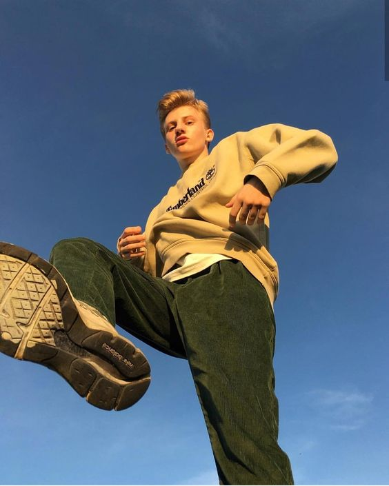
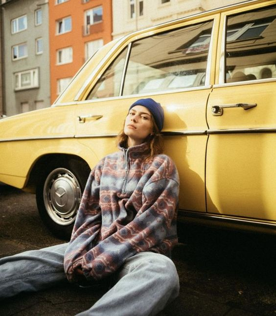
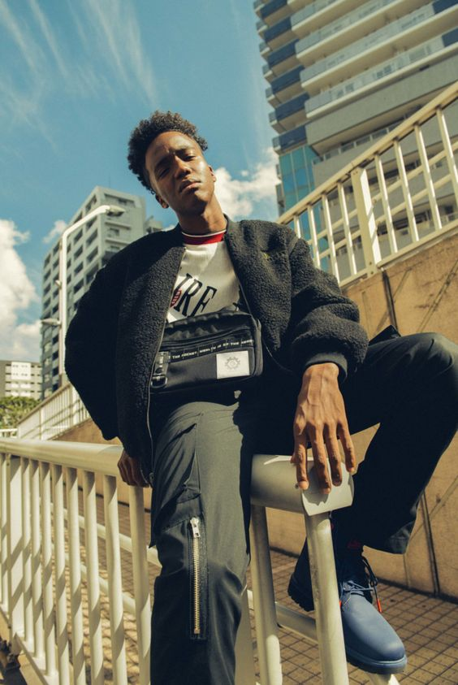
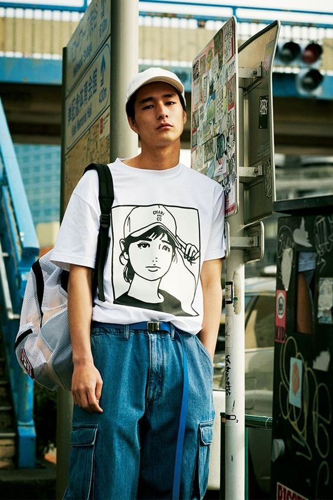
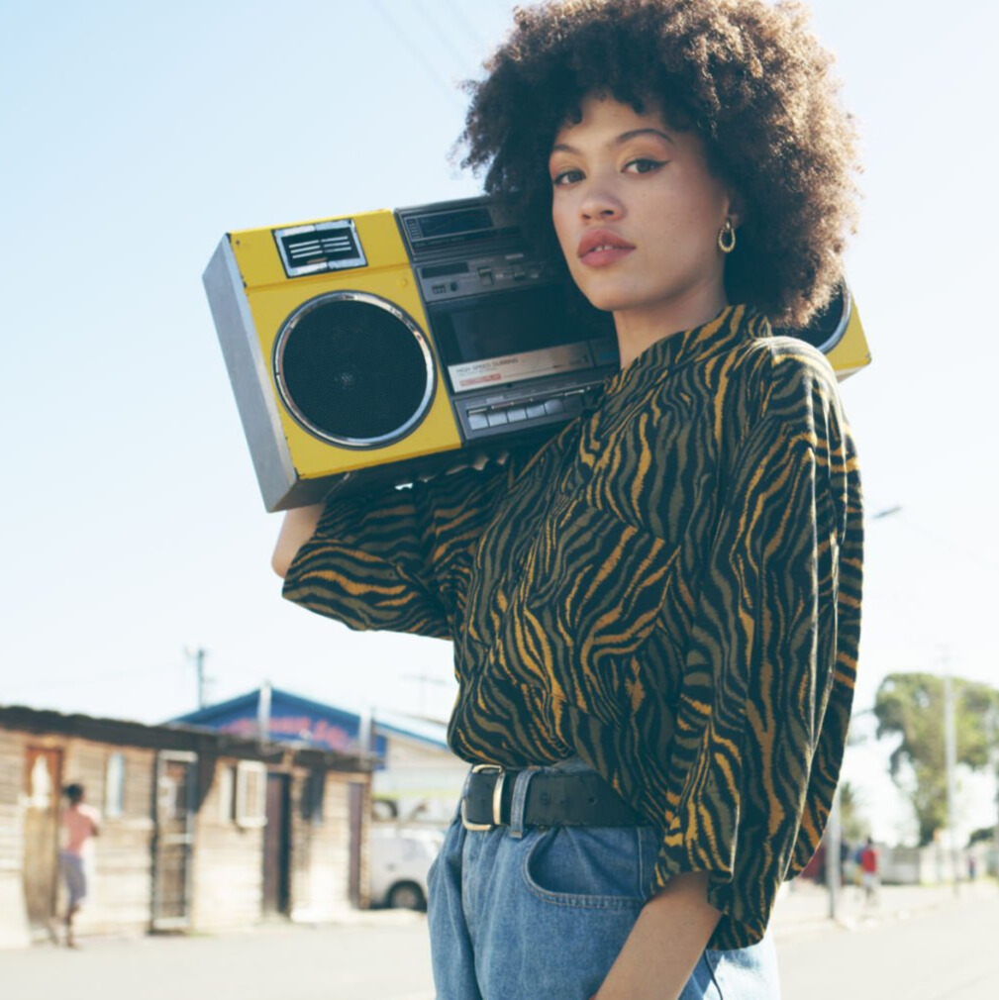
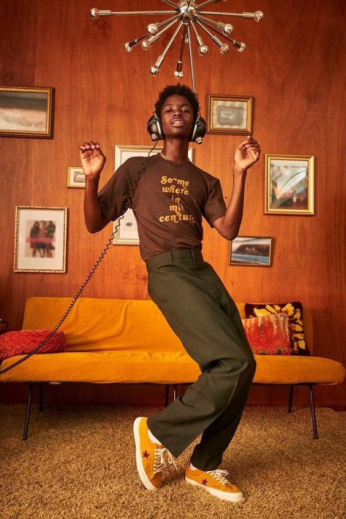
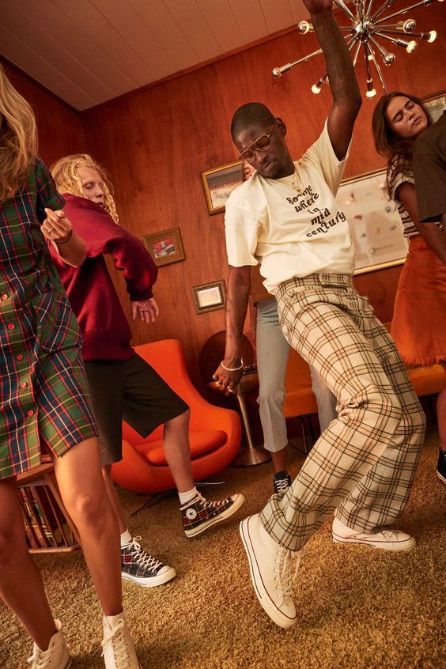
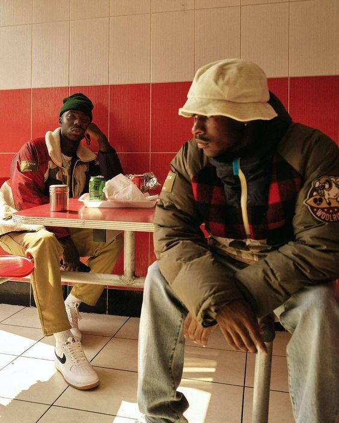
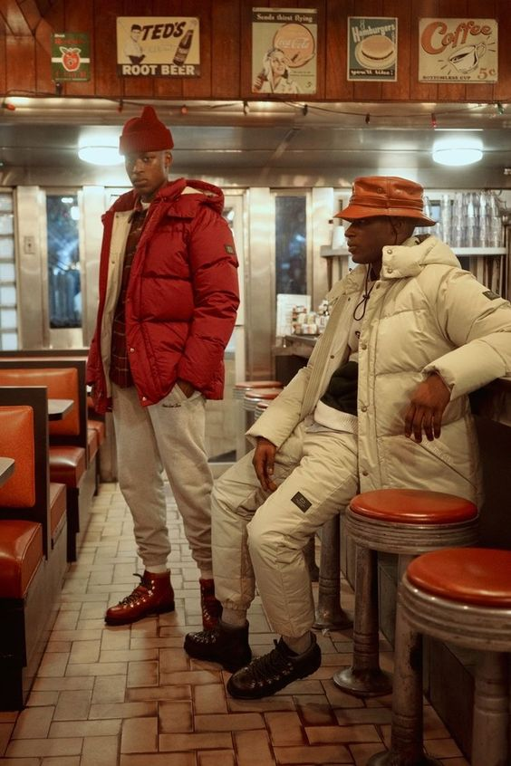
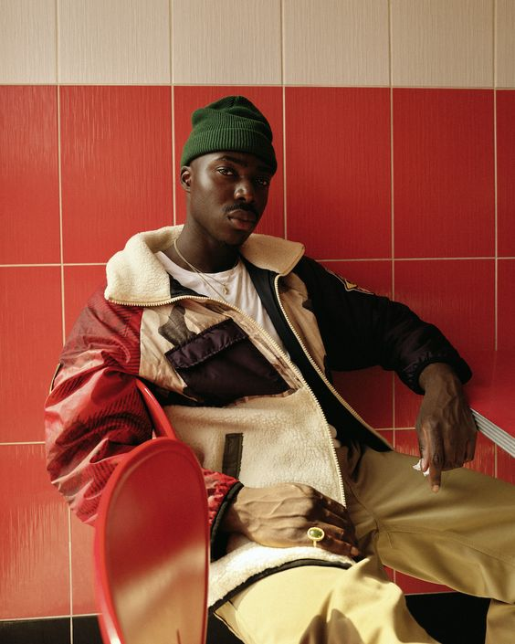

Bienvenido a The Vintage Row
Second hand clothing store
Desde hace más de 10 años, nos hemos establecido como una marca referente en la ropa vintage, con tiendas físicas en las principales ciudades de Europa y en USA, como Nueva York o Los Ángeles. En cada uno de nuestros espacios puedes encontrar una amplia selección de productos vintage únicos y de alta calidad. Piezas de origen norteamericano para llevar cada día, tesoros vintage para ocasiones especiales, piezas que son tendencia y los básicos de cada década, desde los 50's hasta los 00's. Trabajamos día a día para conseguir las prendas más exclusivas, con la originalidad y calidad de cada prenda como uno de nuestros principios básicos.
Ecofriendly
Hemos visto como en los últimos años se ha formado una comunidad cada vez más grande de consumidores que tiene una gran conciencia de los problemas de sostenibilidad. El dominio de las cadenas de tiendas baratas que ofrecen productos idénticos y de baja calidad han ayudado a que tengamos conciencia de que la moda debe ser responsable con nuestro planeta. Por eso trabajamos en pro de ropa que reduce el consumo y nos ayuda a vivir en una sociedad con una economía más sostenible. Comprar en VintageRow significa reutilizar una prenda en buenas condiciones para un nuevo uso y así construir una cultura donde controlar de forma responsable el gasto energético y económico, así como la contaminación derivada del teñido de nuevas piezas. Al comprar ropa usada, reducimos nuestro impacto medioambiental.
Marcas
Muchas de nuestras prendas son joyas vintage de primeras marcas como Adidas, Levis, Harley Davidson, Lacoste, Puma, Ralph Lauren, Nike, Fila, Diadora....
Un poco de inspiración...
|  |  |  |  |  |
|  |  |  |  |  |